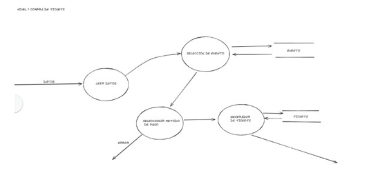
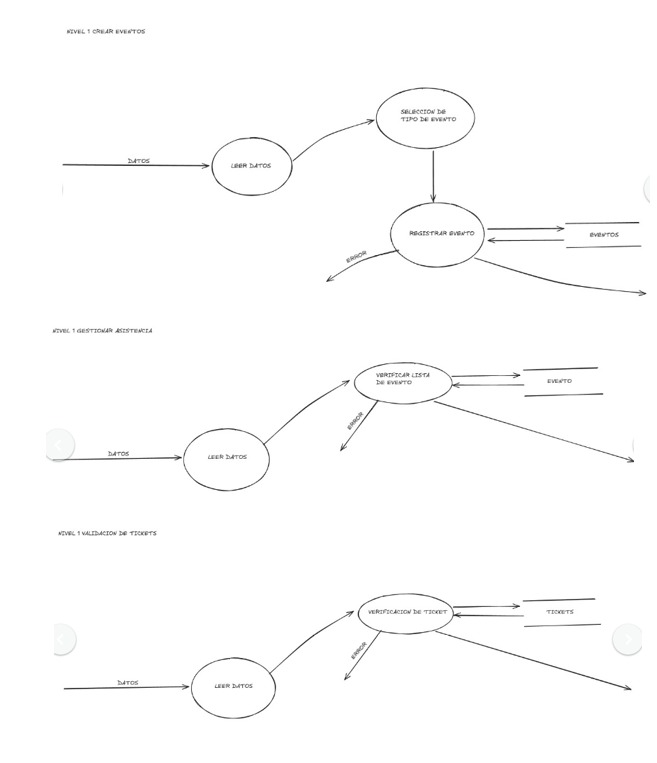
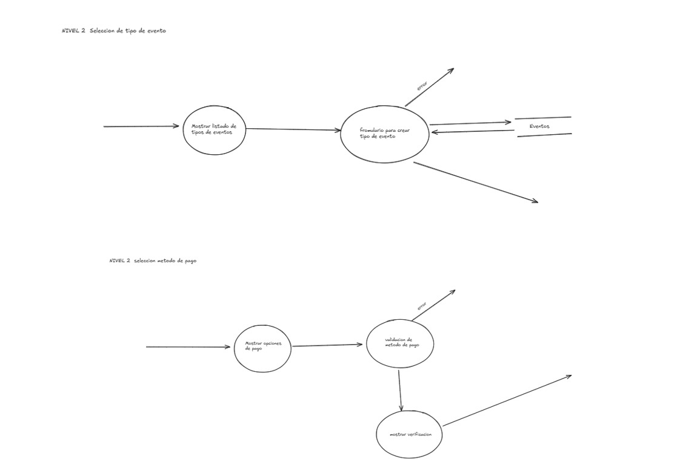

Diagrama de Flujo de Datos (DFD)
DFD Nivel 0 - Visión General del Sistema

Representa el sistema como un único proceso principal que interactúa con todas las entidades externas.
DFD Nivel 1 - Descomposición del Proceso Principal
Descompone el proceso principal en 5 subprocesos: Gestión de Eventos, Registro de Usuarios, Procesamiento de Compras, Control de Pagos y Generación de Reportes.

DFD Nivel 1

DFD Nivel 1

DFD Nivel 2

Los DFD forman parte del Modelo de Comportamiento y son fundamentales para el diseño posterior de la base de datos y las interfaces del sistema.